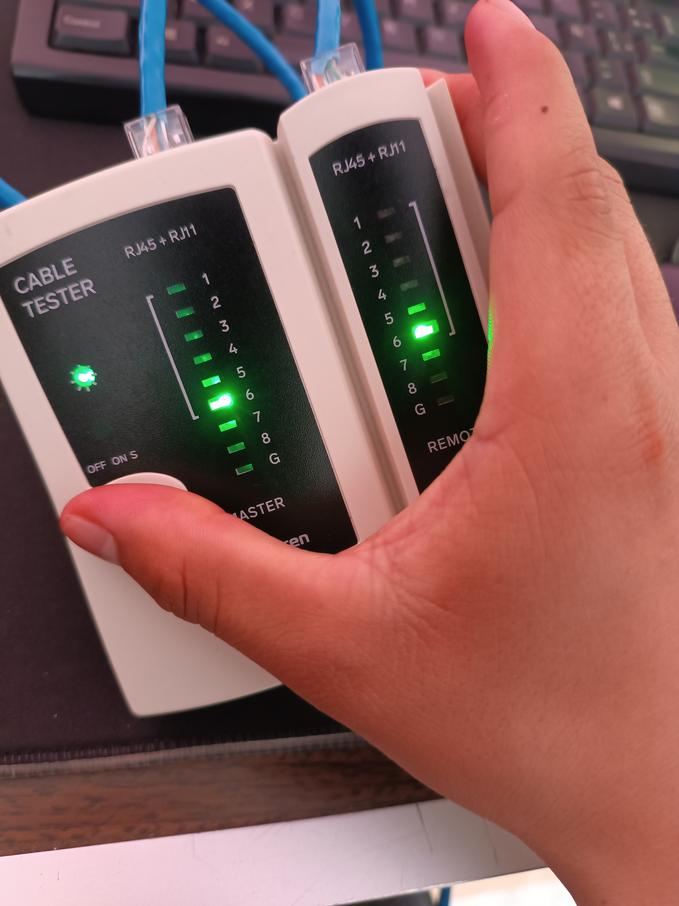
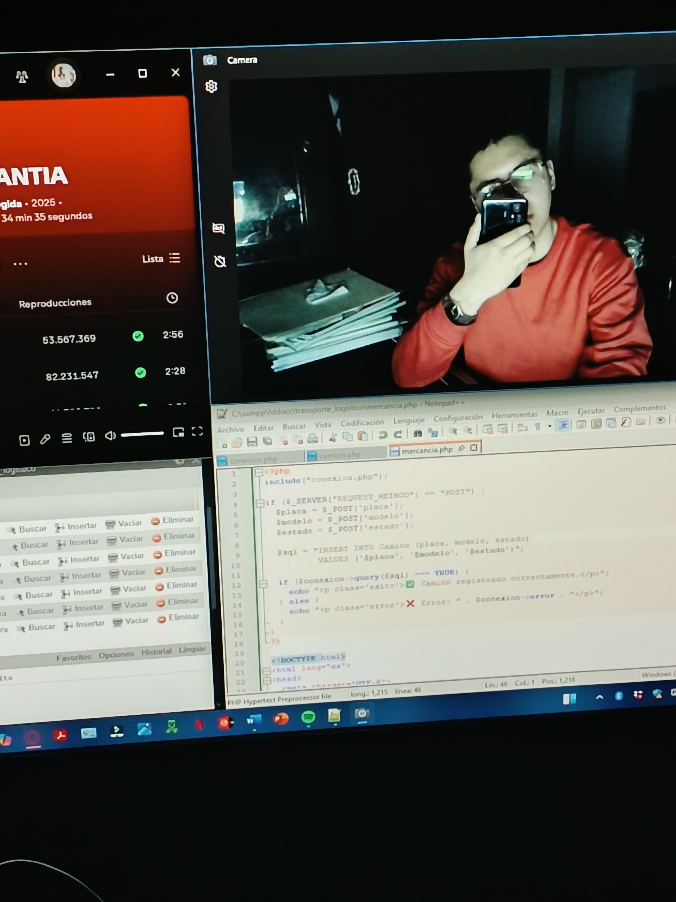

Transformación Digital y Soporte Operativo
Durante mi formación dual, lideré la modernización del despacho contable eliminando la dependencia de procesos manuales. Mi rol abarcó desde el desarrollo de software a medida (ERP corporativo) hasta la gestión de infraestructura, redes y soporte técnico integral.
Desarrollo de Software Corporativo
Rastreo Confidencial
Desarrollo de un script invisible en Google Cloud para la dirección. Generación de enlaces rastreables en Word/PDF que notifican fecha y hora de apertura mediante alertas automatizadas a Gmail, con redirección transparente al portal del SAT.
ERP Corporativo (React)
Creación de una plataforma web centralizada con Sistema de Jerarquías (RBAC). Accesos blindados donde contadores y pasantes operan bajo un Buzón de Tareas y herramientas como una Calculadora Fiscal interactiva (IVA, RESICO).
Pipeline ETL (Python)
Diseño y despliegue de un pipeline ETL (Extract, Transform, Load) automatizado en Python para la limpieza, transformación y unificación de datos financieros masivos. El sistema procesa múltiples archivos Excel, purga anomalías en los encabezados y unifica la información en un Reporte Maestro Consolidado, reduciendo el error humano a cero.
Prueba de Concepto: IA 3D
Desarrollo y presentation de una Prueba de Concepto (PoC) orientada a modernizar el soporte técnico interno. Diseñé la arquitectura de un asistente virtual inteligente, integrando modelos 3D (.vrm) con un framework nativo en Python, proyectado para automatizar la resolución de consultas técnicas corporativas.
Infraestructura, Soporte e IA
Soporte IT Integral
Resolución ágil de incidencias técnicas en el entorno laboral. Ejecución de mantenimientos preventivos y correctivos a equipos de cómputo para garantizar el uptime y la productividad continua del personal administrativo.
Redes LAN y Energía (UPS)
Instalación, cableado y configuración de redes locales. Mantenimiento especializado a sistemas de energía ininterrumpida (APC UPS) para blindar los servidores físicos contra cortes eléctricos y variaciones de voltaje.
Seguridad Endpoint y Licencias
Configuración de políticas de restricción de accesos corporativos (bloqueo de máquinas a perfiles específicos) y gestión integral de despliegue de licenciamiento Microsoft Office 365 Professional.
Integración de I.A.
Diseño e implementación de asistentes basados en Inteligencia Artificial adaptados a las necesidades operativas de los clientes, automatizando respuestas y optimizando la carga de trabajo diaria.
Evidencia Práctica
Documentación visual de implementaciones técnicas, configuración de infraestructura y desarrollo de software.

Cableado Estructurado
Topología e Infraestructura

Desarrollo Back-end
Algoritmos en Python

Prácticas de Campo
Entorno de pruebas